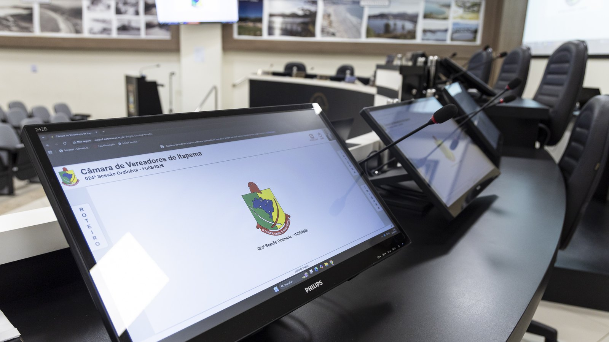

Itapema · Poder Público
Itapema · Poder PúblicoO projeto que proíbe obra nova na rua durante a temporada de Itapema voltou 585 dias depois, sem a comissão que daria assento ao Sinduscon e com a multa dez vezes menor
A peça que será lida na sessão desta terça.
A Câmara de Itapema publica a lista de presença de cada sessão, uma por uma, e não soma nada. Abrimos as 83 listas de 2025 e 2026 e fizemos a conta. Em 2026 foram 33 sessões, 429 registros e 17 ausências: presença de 96,0%. Seis dos 13 vereadores não faltaram nenhuma vez. Em 2025 foram 50 sessões e 95,2%. E houve troca de posição: Raquel Aparecida Josino, que teve 8 faltas em 2025, a maior daquele ano, está com 100% em 2026. André de Oliveira fez o caminho contrário, de 100% em 2025 para 84,8% agora. Nenhuma sessão deste ano teve menos de 11 dos 13 presentes. A lista publicada não diz o motivo de nenhuma ausência.
Em 30 segundos · Modo de Leitura, formato original Santa Informa
A Câmara de Itapema tem 13 vereadores.
Eles se reúnem em sessão quase toda terça.
A Casa publica a lista de presença de cada sessão.
Mas publica uma lista por vez.
Ninguém soma o ano inteiro.
Nós somamos.
Abrimos 83 listas, de 2025 e 2026.
Em 2026 foram 33 sessões até agora.
São 30 ordinárias e 3 extraordinárias.
Isso dá 429 registros de presença.
Desses, 17 foram ausência.
A presença do ano é de 96,0%.
Seis vereadores não faltaram nenhuma vez.
São João Vitor de Souza e Márcio José da Silva.
Mauro Roberto Alves Cordeiro e Raquel Aparecida Josino.
Sidnei Sassaki e Yagan Dadam.
Em 19 das 33 sessões a casa estava cheia.
A menor presença do ano foi de 11 dos 13.
Isso aconteceu em três sessões.
Em 2025 a Casa fez 50 sessões.
Foram 650 registros e 31 ausências.
A presença daquele ano foi de 95,2%.
Subiu menos de um ponto de um ano para o outro.
Mas as posições mudaram bastante.
Raquel Aparecida Josino teve 8 faltas em 2025.
Foi a maior do ano.
Em 2026 ela está com 100%.
André de Oliveira fez o contrário.
Teve 100% em 2025.
Está com 84,8% em 2026.
São 5 faltas em 33 sessões.
A lista não diz por que ninguém faltou.
Falta pode ser justificada.
Licença, atestado e missão da Casa entram aí.
O documento publicado não separa uma coisa da outra.
Ele só marca Presente ou Ausente.
Poder PúblicoPublicada em Redação Santa Informa

A Câmara de Vereadores de Itapema publica, no portal dela, a lista de presença de cada sessão. Você abre a sessão, vê os 13 nomes e, ao lado de cada um, a palavra Presente ou Ausente. É um dado aberto e limpo. O problema é que ele vem picado: uma página por sessão, e nenhuma soma. Para saber quanto cada vereador sentou na cadeira no ano, alguém precisa abrir as páginas uma a uma. Foi o que fizemos. Abrimos 83 listas, as 33 sessões de 2026 e as 50 de 2025, e somamos os 1.079 registros de presença.
Foram 33 sessões entre 19 de janeiro e 22 de setembro, 30 ordinárias e 3 extraordinárias. Com 13 vereadores, isso dá 429 registros. Desses, 412 são presença e 17 são ausência, o que fecha o ano em 96,0%, conta nossa. Em 19 das 33 sessões as 13 cadeiras estavam ocupadas. Nas outras 14 faltou gente, e o máximo de ausentes numa mesma noite foi 2, o que aconteceu em 30 de junho, na extraordinária de 17 de julho e na sessão de 22 de setembro. Ou seja: a Casa nunca esteve com menos de 11 dos 13.
Seis vereadores atravessaram o ano sem faltar uma vez: João Vitor de Souza, Márcio José da Silva, Mauro Roberto Alves Cordeiro, Raquel Aparecida Josino, Sidnei Sassaki e Yagan Dadam. Depois vêm Rute Maurina Correia Guedes, com 1 falta, e quatro empatados com 2: Jaison Simas, Leonardo Arlindo Cordeiro, Lorita Duro Montagner e Zulma Souza. Saulo Salustiano Ramos Neto tem 3, e André de Oliveira tem 5, a maior marca do ano, o que o deixa em 84,8% de presença.
Aí está a parte que o número de um ano só não mostra. Em 2025 a Casa fez 50 sessões e fechou em 95,2%, com 31 ausências em 650 registros. A média quase não mexeu, subiu 0,8 ponto. Quem mexeu foram as pessoas. Raquel Aparecida Josino foi quem mais faltou em 2025, com 8 ausências e 84,0% de presença, e em 2026 não faltou nenhuma vez. André de Oliveira, que em 2025 não faltou a nenhuma das 50 sessões, é hoje quem mais faltou. Uma observação de leitura: em 2025 aparecem 14 nomes na série, porque houve troca de cadeira no fim do ano, e a conta de cada um é feita só sobre as sessões em que ele estava na Casa.
O resumo de 30 segundos está no topo e a versão completa é o texto acima. Aqui ficam as três leituras da casa sobre o mesmo assunto.
Clara, a otimista
O número que salta aqui é o 96%, e ele é bom. Numa Casa de 13 pessoas, com sessão quase toda semana o ano inteiro, manter a bancada cheia em 19 de 33 noites não é pouca coisa. E o piso é ainda mais firme que a média: mesmo na pior noite do ano havia 11 vereadores sentados. Ninguém em Itapema perdeu uma sessão porque faltou gente para abrir.
Gosto também da história da Raquel. Em 2025 ela foi a vereadora com mais ausências, com oito. Em 2026 não faltou uma vez sequer. Isso é virada de comportamento, está registrado em documento público e vale ser dito com todas as letras. Dado só serve se também servir para reconhecer quem melhorou.
Seu Prudêncio, o criterioso
Merece atenção o fato de a Câmara publicar o dado e não publicar o total. A informação está lá, aberta e correta, mas espalhada em 83 páginas. Quem quiser saber a frequência de um vereador no ano precisa fazer o que nós fizemos, e a maior parte das pessoas não vai fazer. Uma sugestão útil: uma página só, com o acumulado do ano por vereador, atualizada depois de cada sessão. O sistema já tem todo o dado; falta a soma.
Vale acompanhar também a lacuna do motivo. Falta com atestado médico e falta sem justificativa aparecem escritas com a mesma palavra, e isso prejudica quem faltou por razão legítima tanto quanto ajuda quem faltou sem razão. Publicar a justificativa, quando ela existe, protege o vereador e informa o eleitor ao mesmo tempo.
Dito isso, o mérito é evidente e precisa ser registrado. A Casa publica sessão por sessão, com nome e situação, sem esconder nada e sem pedir cadastro. Muita câmara de porte parecido não publica isso, ou publica em PDF escaneado. O dado de Itapema abriu, estava íntegro nas 83 páginas e bateu com ele mesmo. Foi justamente por isso que esta conta pôde ser feita.
Caco, o sarcástico
Passei a manhã abrindo 83 páginas de lista de presença para descobrir que quase todo mundo vai. Eu esperava escândalo e encontrei 96%. É a apuração mais frustrante e mais tranquilizadora que já fizemos.
O melhor é o cruzamento dos dois anos. Quem tinha 100% em 2025 está com 84,8%, e quem tinha a pior marca de 2025 está com 100%. Trocaram de lugar com uma sincronia que nenhum roteirista conseguiria. Só faltou alguém avisar os dois.
E fica o convite à Câmara: o dado é de vocês, está bonito e está certo. Botem a soma numa página só. Aí eu não preciso mais fazer isso, e vocês ficam com o crédito, que é justo.
Fontes: todas as contas deste texto saem das listas de presença publicadas pela Câmara de Vereadores de Itapema, que abrimos uma a uma no portal da Casa. A relação completa das sessões, com número, tipo e data, está na lista de presenças do portal da Câmara de Itapema, e cada sessão tem a própria página com os 13 nomes e a marcação de Presente ou Ausente, como a da 030ª Sessão Ordinária, de 22 de setembro de 2026, a mais recente, e a da 001ª Sessão Ordinária, de 3 de fevereiro de 2026, a primeira ordinária do ano. Foram 83 páginas assim, 33 de 2026 e 50 de 2025, e nenhuma delas voltou incompleta. As somas por vereador, os percentuais, a contagem de sessões com a casa cheia e a diferença de 0,8 ponto entre os dois anos são contas nossas sobre esses documentos, e não existem publicadas em lugar nenhum. A observação sobre os 14 nomes de 2025 vem da própria série: duas cadeiras aparecem com número de sessões diferente do resto, o que indica troca no fim daquele ano. A afirmação de que a lista não traz o motivo da ausência é descrição do que o documento mostra, não afirmação de que a justificativa não exista em outro registro da Casa. O que a Câmara votou nessas sessões está em nossa matéria sobre a 30ª Sessão Ordinária e em nossa matéria sobre a pauta daquela noite. Os dados permanentes da cidade ficam no nosso Raio-X da Região.
Itapema · Poder PúblicoA peça que será lida na sessão desta terça.
 Itapema · Poder Público
Itapema · Poder PúblicoA 30ª Sessão Ordinária, a última da série que somamos.
 Itapema · Poder Público
Itapema · Poder PúblicoOutro número que a Casa publicou e ninguém tinha somado.